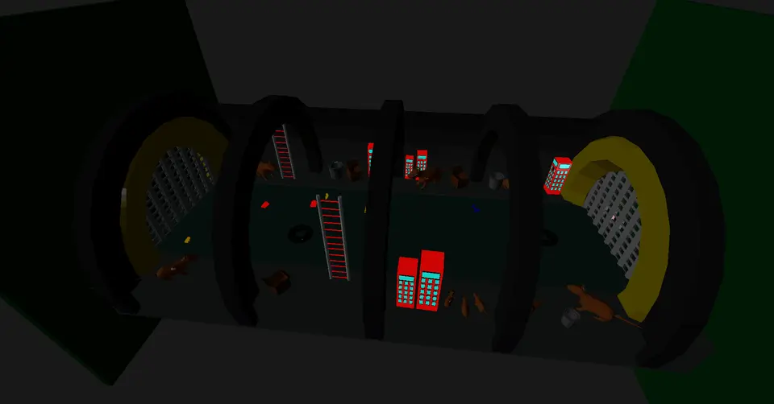
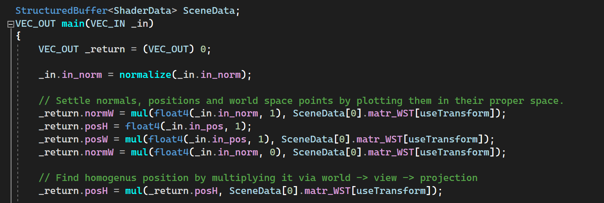
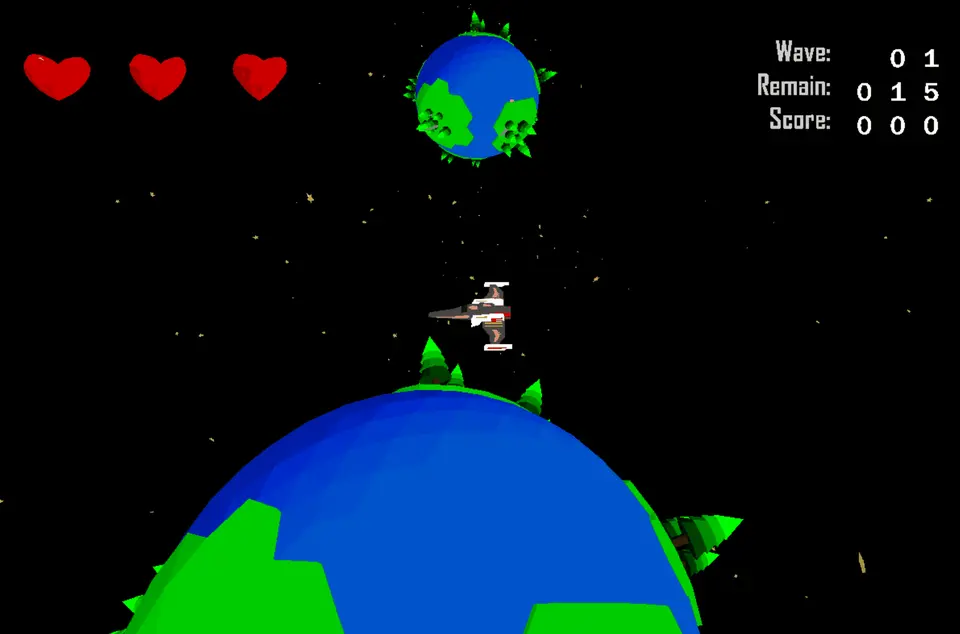
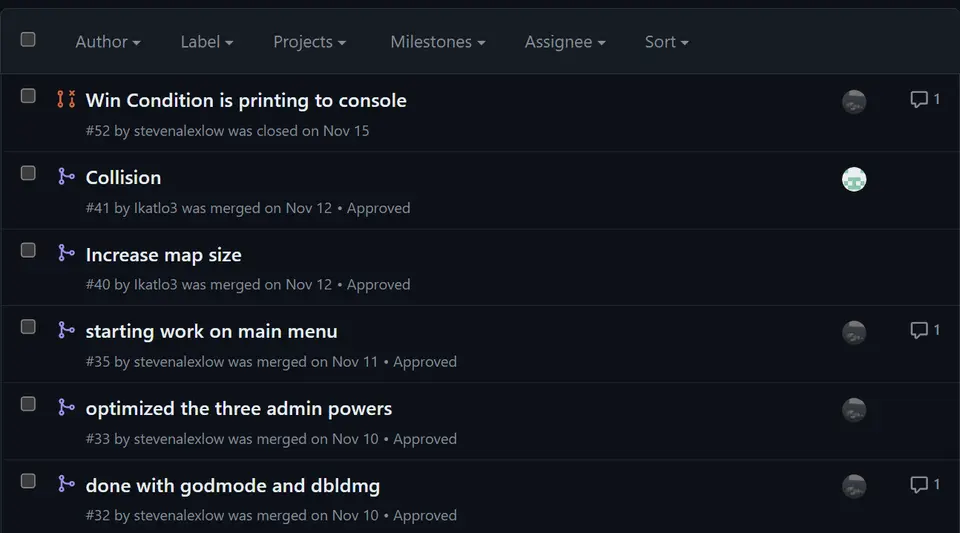
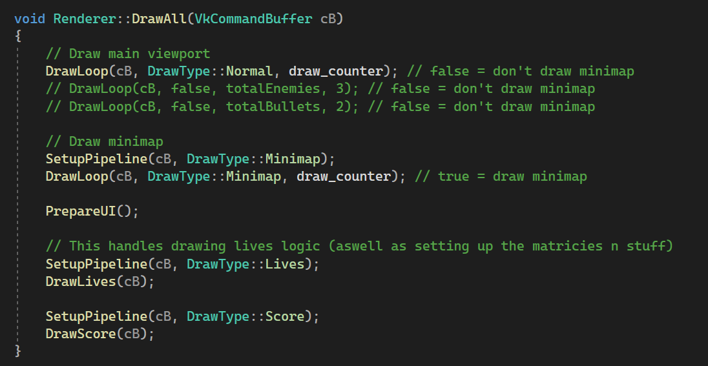
A screenshot of the main menu, featuring a rotating planetary background and moving text!
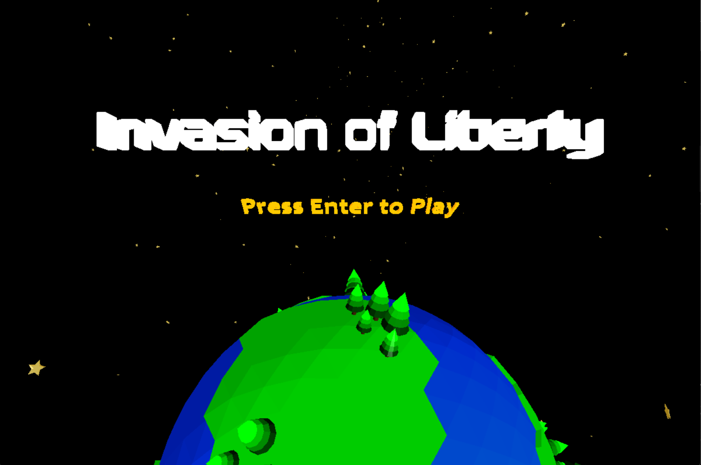
When attempting to get the camera to follow the player, I managed to recreate a GTA V style cinematic camera which wasn't ideal but was cool nonetheless.
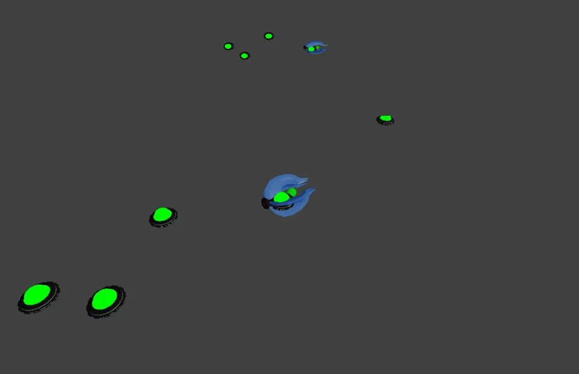
This was a prototype of the game after week 2, models were being created and imported as well as shooting from the player.
Using the greyscale shader in action for a requirement on one of the assignments, though I didn't want to take it out cause it provided a nice retro look to the game.
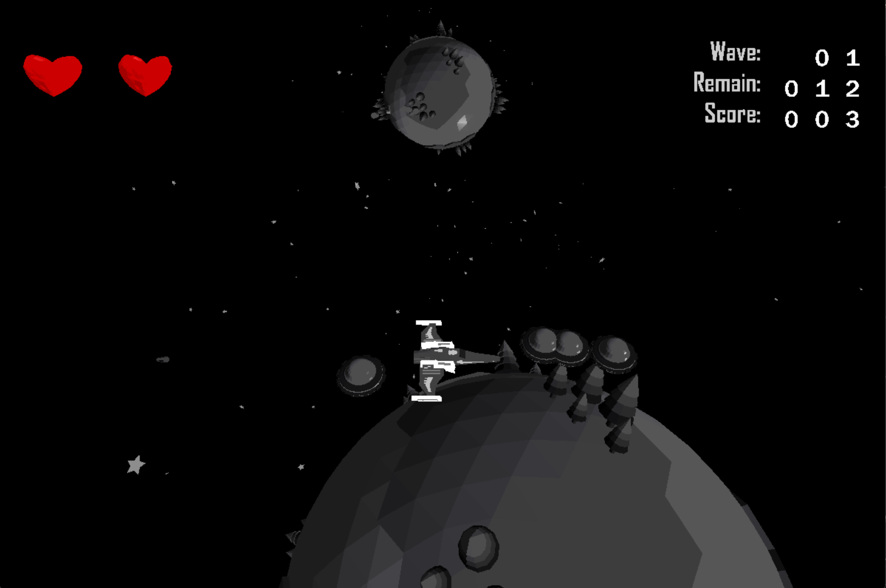
The fan favorite wireframe mode in action, showcasing the low-poly models I created during the month for the project.
Displaying that the game was paused was actually one of the last-second additions, our team lead Jerry had already made pausing functional, it just needed the display that I added in.
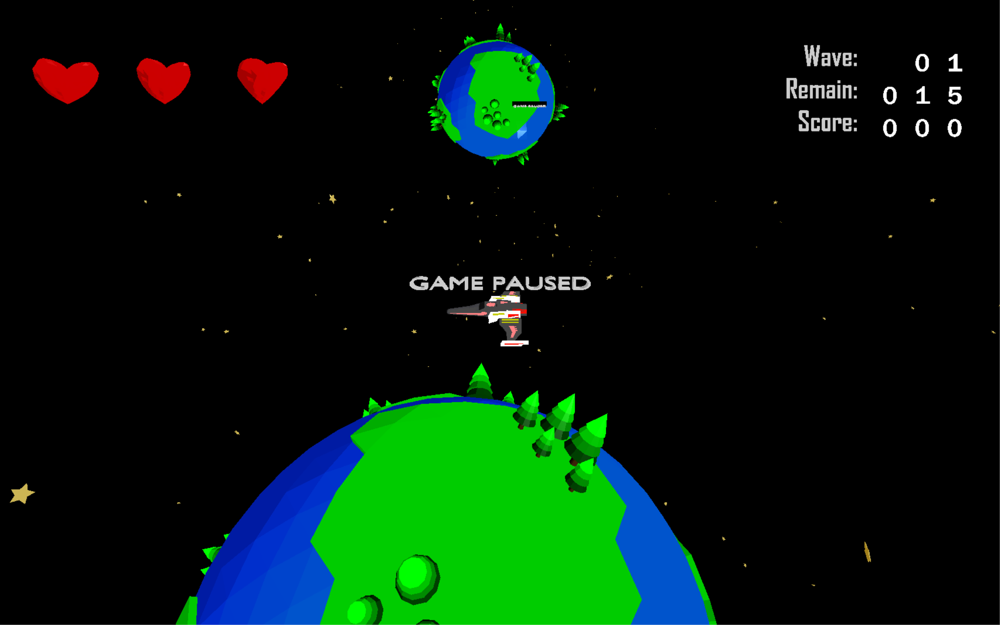
This was one of the times when model IDs got mismatched during a build process. It was quite funny to see the player shooting out planes and bullets so I thought I would add it here.
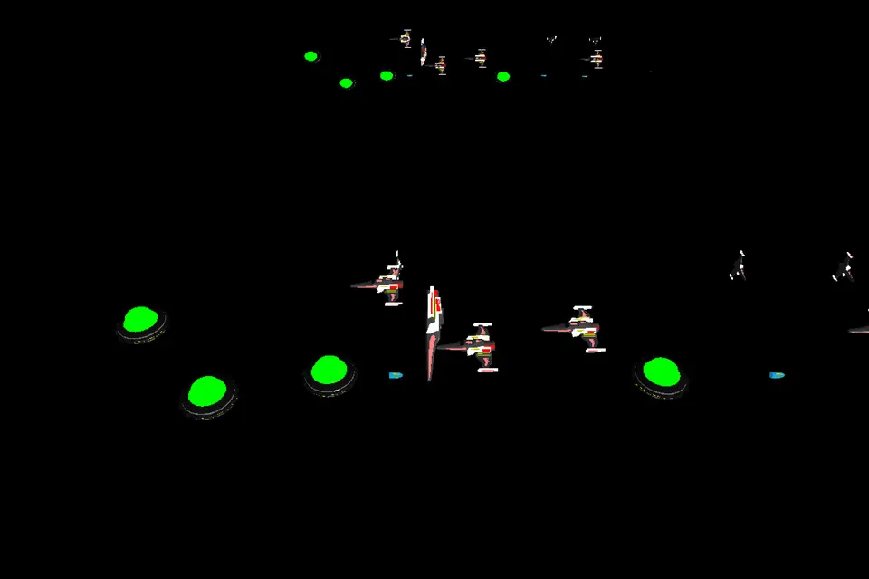
For the health display system, I decided to use custom 3D Heart models that rotated.
One of the earlier implementations of the main menu that I managed to make, which resulted in incorrect model IDs.
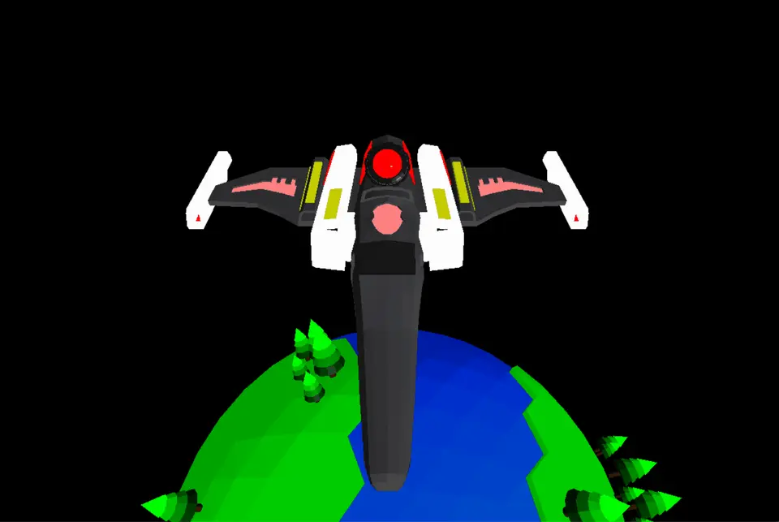
Some gameplay of our game in Wave 1, where the player bravely fights off the oncoming enemies!
Every entity model has a unique destroyed model that displays when wiped out.
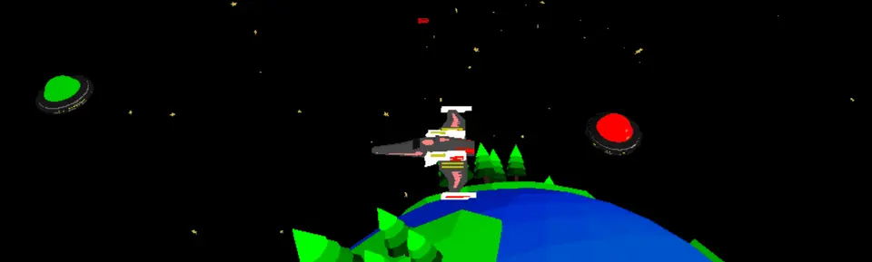
A close-up of the minimap. The player is shown as a purple square and the enemies are red circles to contrast the planet below.
Using 3D models for the text I was able to display the player's score accurately each time it was updated.
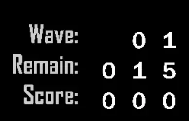
Main menu
Fullscreen view
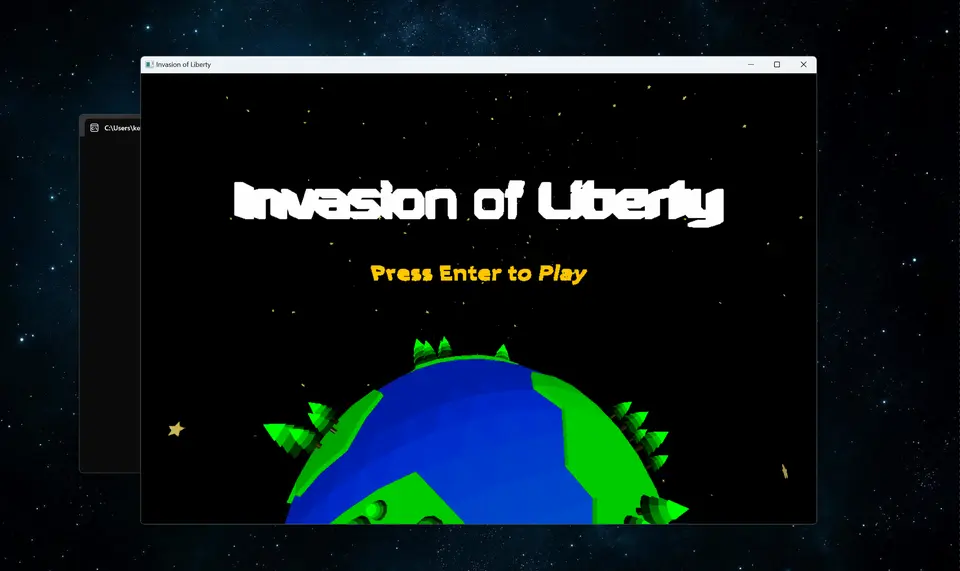
Greyscale shader
Greyscale effect applied
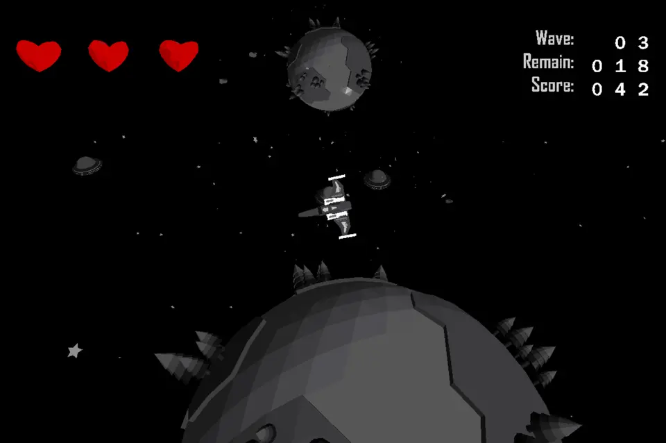
Score display with greyscale effect
Cheat mode
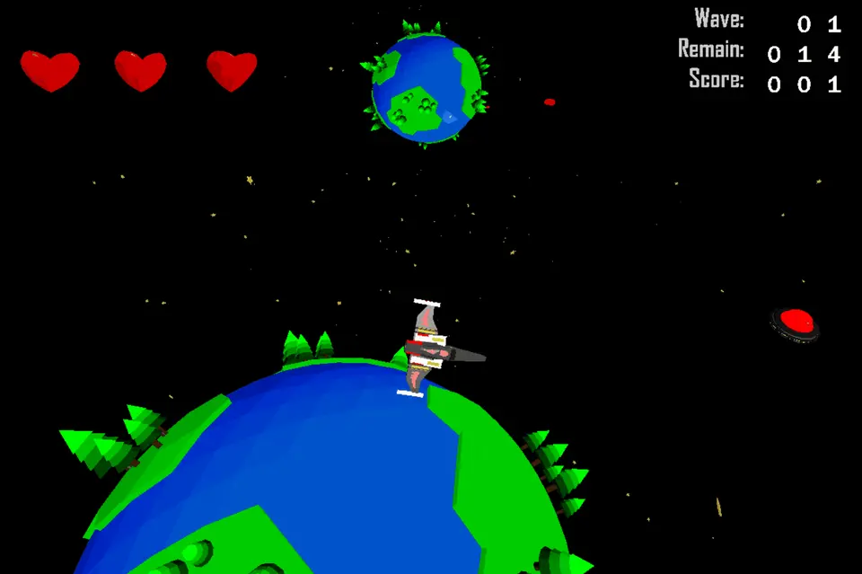
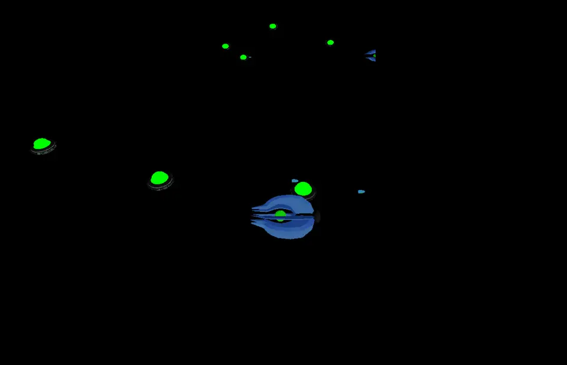
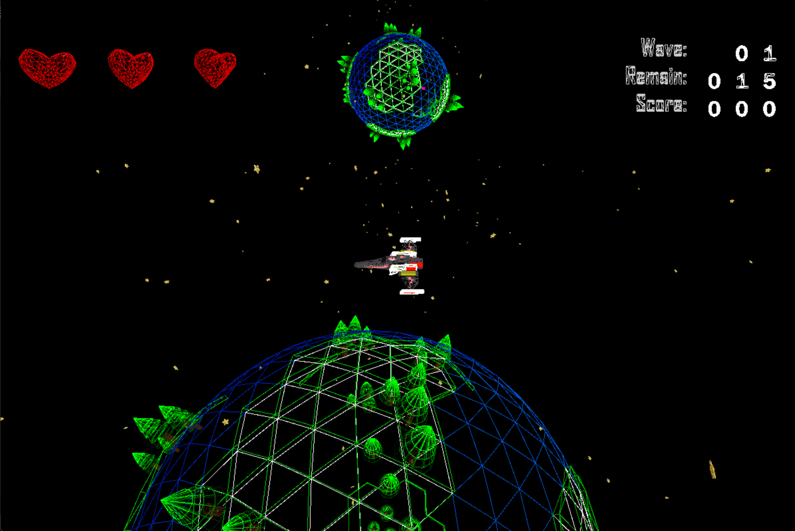
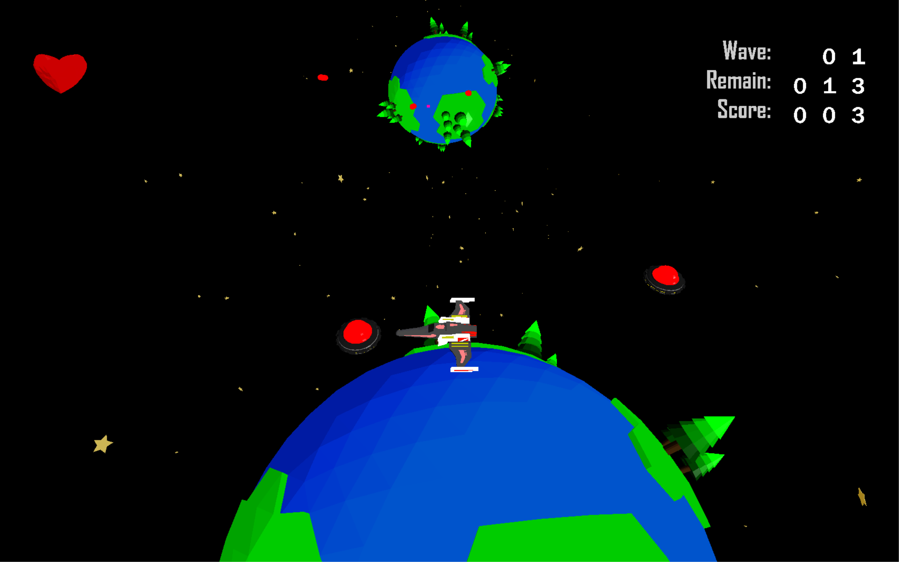